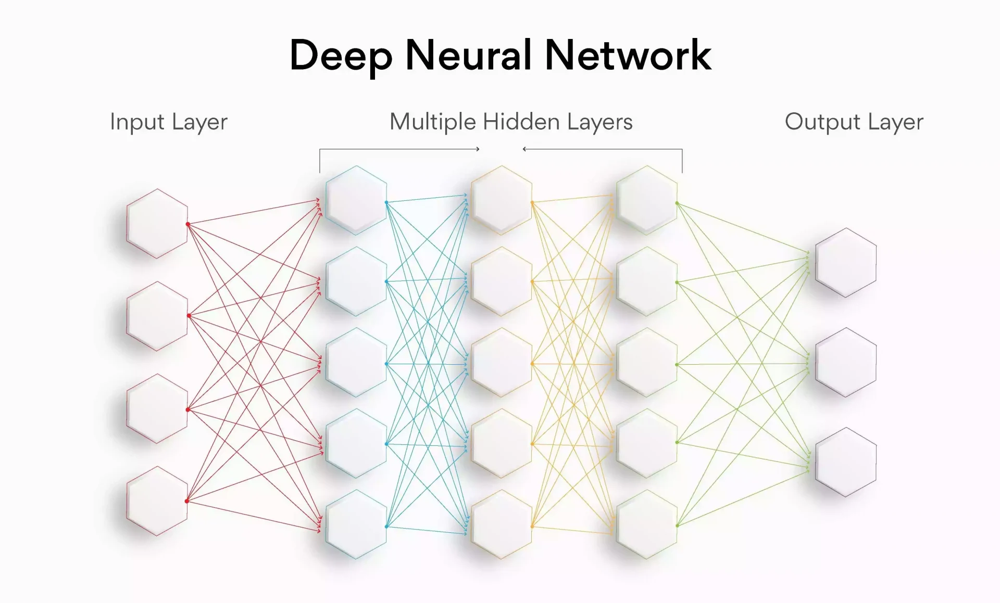
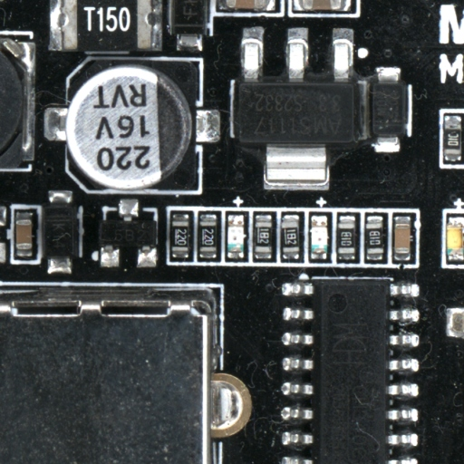
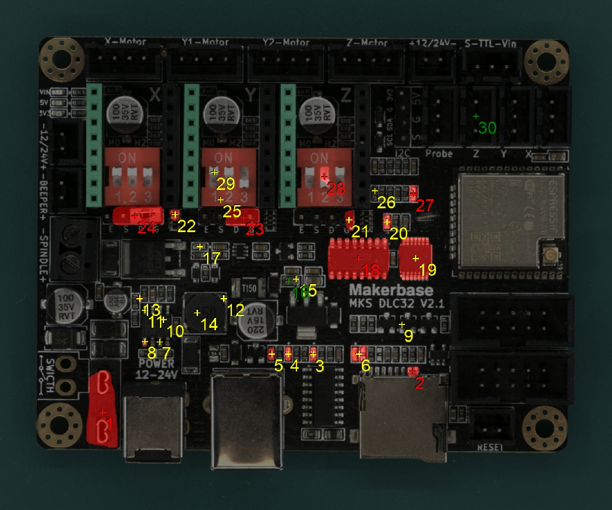

Terminology
Neural Network
In machine learning, neural network refers to a group of artificial neurons organized in a specific way to perform a specific task. Each neuron represents a mathematical function. In the case of AgnosPCB, these neurons perform a visual inspection for defects in PCBAs. The interconnection architecture of these neurons is constantly being improved to incrase the fault detection rates.

REFERENCE
The REFERENCE image is the image of a fault-free PCBA used for inspections. Before generating the REFERENCE image, the operator must inspect the REFERENCE PCBA (GOLDEN board) to ensure it is free of manufacturing errors.

UUI
The Unit Under Inspection (UUI) is the image of the PCBA that will be inspected during manufacturing. This image is compared to the REFERENCE image to detect manufacturing defects.

Inference
This is the result of comparing the REFERENCE and UUI images. Errors, if any, are marked in red on the UUI image. All errors are numbered for easy reference.

Report
Errors detected by the software must be reviewed and confirmed by an operator. They can be reported as a real error or a false positive and labeled with the error type. All these reported errors will be used to generate a final inspection PDF report.

Error
We define an error as a component that is not assembled correctly, is damaged, or missing. Any contamination or damage on the board is also considered an error.
False positive
False positive flagging occurs when the AgnosPCB software detects a sufficient difference between the REFERENCE and UUI on a component to flag it as an error, but there is no actual failure affecting the PCBA's operation. This can be caused by a change in the marking, shape, or color of a component that is equivalent to the reference.